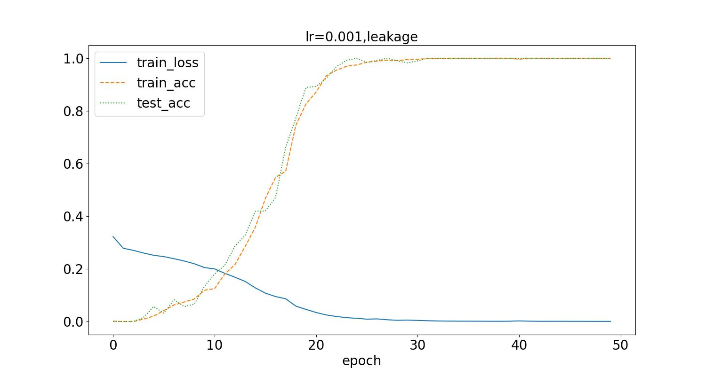
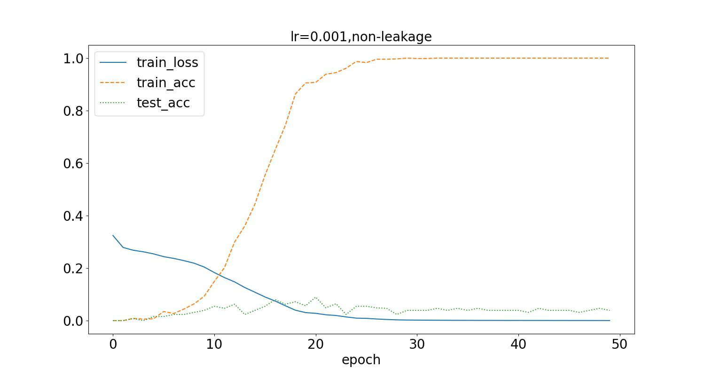
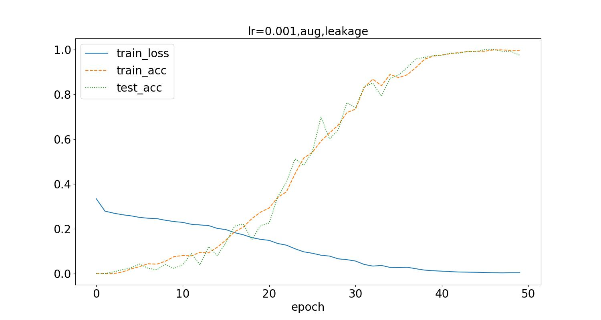
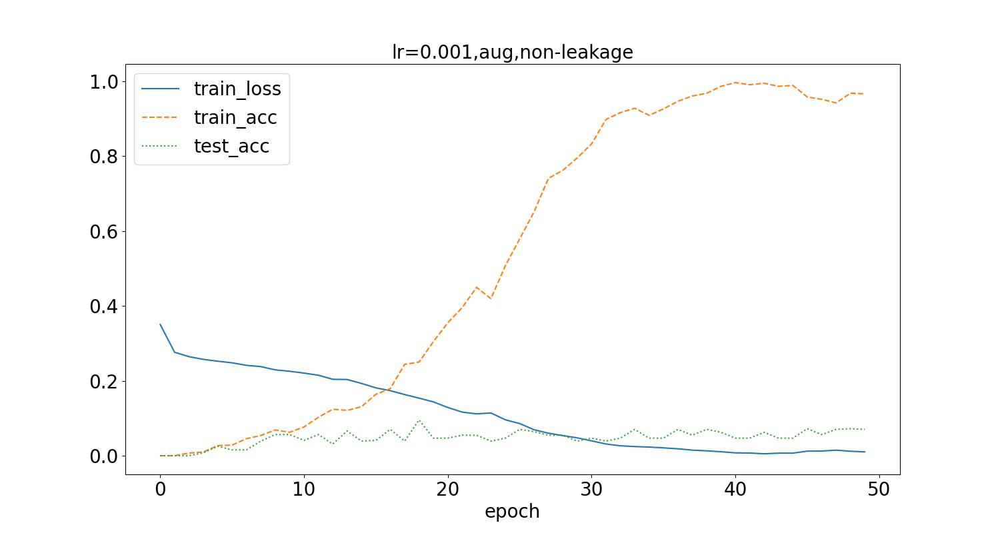
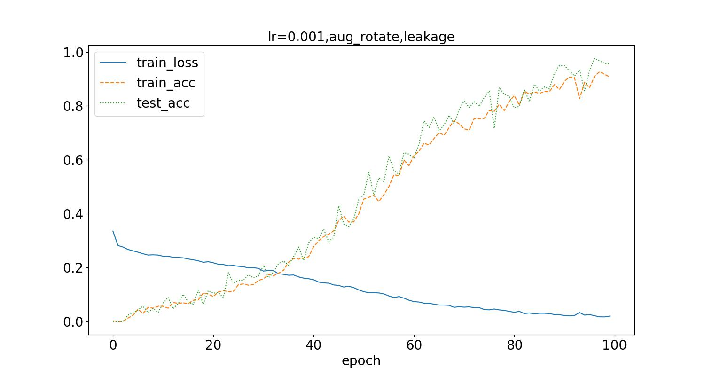
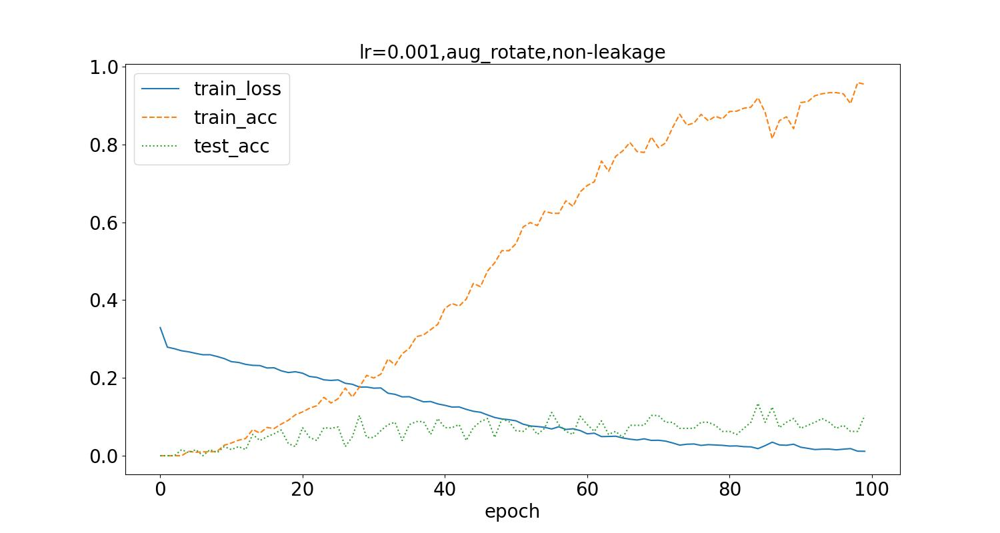
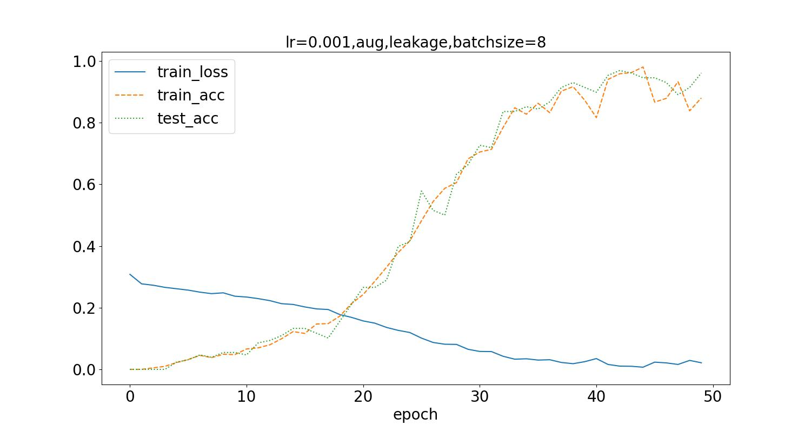
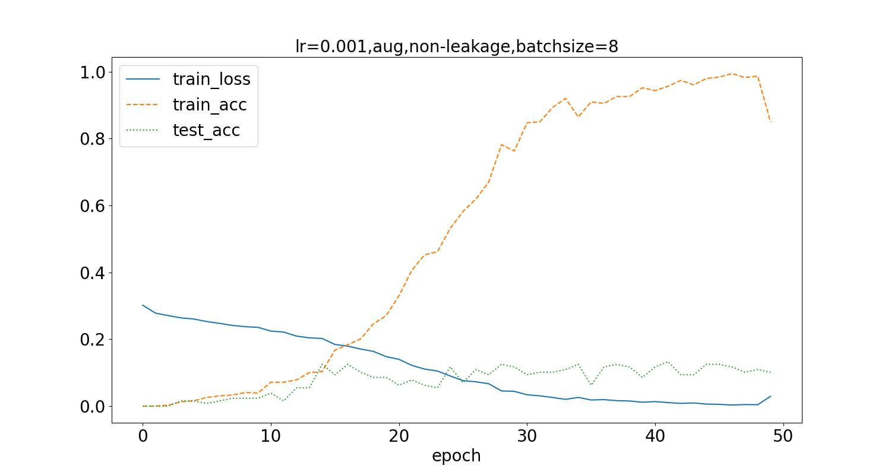

5. 精灵宝可梦类型预测任务
作业名称：使用 CNN 完成 Kaggle 公开数据集 Pokemon Image Dataset 上的精灵宝可梦类型预测任务
姓名：许展风 学号：3210100658
电子邮箱：zhanfeng_xu@outlook.com 联系电话：15224131655
老师：潘纲老师 报告日期：2024年1月23日
5.1. 一、功能简述及运行说明
5.1.1. 1.1 功能简述
使用 PyTorch 自己设计 CNN，自己训练完成 Pokemon Image Dataset 上的精灵宝可梦类型预测任务
应用数据增广方法
调整超参数进行对比实验，对测试集上的准确率等实验结果进行比较分析
要求在测试集泄露和不泄露两种情况下进行训练，在测试集上进行测试对比
5.1.2. 1.2 运行说明
data.py文件用于数据预处理，将Pokemon Image Dataset上的精灵宝可梦数据集按要求分为训练集与测试集，以及泄露了测试集的训练集，并将宝可梦类型进行编码。
run.py文件进行数据装载以及超参数设置，运行模型训练与测试函数，输出结果。
5.2. 二、开发与运行环境
编程语言：python 3.10.6 torch 2.0.1+cu118 torchvision 0.15.2+cu118
运行环境：Windows
5.3. 三、算法原理
5.3.1. 多分类问题
多标签分类任务指的是一条数据可能有一个或者多个标签。
多分类任务指的是一条数据只有一个标签，但是标签有多种类别。
本任务是一个多标签分类任务，识别图片，辨认宝可梦的属性，理论上可以通过多个二元分类识别的神经网络来识别，考虑到宝可梦类型只有1或2个，也可以通过合适的编码，将18个多标签分类任务转变为（18+18*17）多分类问题。但是显然两种转化方式效率很低，不如直接将类别编码后来训练网络，让网络直接输出结果。
5.3.2. 图像增强
图像增强通过对训练图像进行一系列随机改变，生成相似但不同的训练样例，从而扩大训练集的规模。另外，图像增强可以由这样一个事实驱动，即随机调整训练示例允许模型减少对某些属性的依赖，从而提高它们的泛化能力。例如，我们可以用不同的方式裁剪图像，使感兴趣的物体出现在不同的位置，从而减少模型对物体位置的依赖。我们还可以调整亮度和颜色等因素，以降低模型对颜色的敏感度。
5.4. 四、具体实现
5.4.1. 4.1 数据预处理
主要流程参考案例的处理方法，将两栏类型合并为一个列表，由于需要按要求分类，因此通过merge的方法补全要求数据中名字对应的标签，再分别提取即可。
# 将要求的训练集与测试集标签补全
df_train = pd.merge(df_train, df[['Name', 'Type']], on='Name', how='left')
df_test = pd.merge(df_test, df[['Name', 'Type']], on='Name', how='left')
由此得到X_all、y_all作为泄露数据集，X_train、y_train作为未泄露数据集，X_test、y_test作为测试集。
多元编码将18种类型编码为18位二进制代码，某一位为1则表示有当前类型。数据集中的标签，编码格式下要么有1个1，要么有2个1。
5.4.2. 4.2 构建网络模型
5.4.2.1. 参考案例构建Pytorch下的模型
其中由5层卷积层和池化层构成，最后有两层全连接层，其中卷积层和池化层之间有BatchNorm，用于进行归一化，提高模型的训练效果与收敛速度。
class pokemonCNN(nn.Module):
def __init__(self, in_channels: int, out_channels: int):
super().__init__()
self.in_channels = in_channels
self.out_channels = out_channels
self.conv1 = nn.Conv2d(self.in_channels,
16,
kernel_size=3,
padding=1,
stride=1)
self.bn1 = nn.BatchNorm2d(16)
self.maxpool1 = nn.MaxPool2d(2, 2)
self.conv2 = nn.Conv2d(16, 32, kernel_size=3, padding=1, stride=1)
self.bn2 = nn.BatchNorm2d(32)
self.maxpool2 = nn.MaxPool2d(2, 2)
self.conv3 = nn.Conv2d(32, 64, kernel_size=3, padding=1, stride=1)
self.bn3 = nn.BatchNorm2d(64)
self.maxpool3 = nn.MaxPool2d(2, 2)
self.conv4 = nn.Conv2d(64, 128, kernel_size=3, padding=1, stride=1)
self.bn4 = nn.BatchNorm2d(128)
self.maxpool4 = nn.MaxPool2d(2, 2)
self.conv5 = nn.Conv2d(128, 150, kernel_size=3, padding=1, stride=1)
self.bn5 = nn.BatchNorm2d(150)
self.maxpool5 = nn.MaxPool2d(2, 2)
self.flatten = nn.Flatten()
self.fullconnection1 = nn.Linear(150 * (120 // 32) * (120 // 32), 64)
self.fullconnection2 = nn.Linear(64, self.out_channels)
def forward(self, x):
x = self.maxpool1(F.relu(self.bn1(self.conv1(x))))
x = self.maxpool2(F.relu(self.bn2(self.conv2(x))))
x = self.maxpool3(F.relu(self.bn3(self.conv3(x))))
x = self.maxpool4(F.relu(self.bn4(self.conv4(x))))
x = self.maxpool5(F.relu(self.bn5(self.conv5(x))))
x = self.flatten(x)
x = F.relu(self.fullconnection1(x))
x = self.fullconnection2(x)
return x
5.4.2.2. 数据集
为了将数据装载到DataLoader上，需要按格式定义数据集类。
# 定义数据集
class pokemonDataset(Dataset):
def __init__(self, X, y, transform=None) -> None:
self.X = X
self.y = y
self.transform = transform
def __len__(self):
return len(self.X)
def __getitem__(self, index):
image_path = self.X[index]
image = Image.open(image_path).convert('RGB')
label = torch.tensor(self.y[index], dtype=torch.float32)
if self.transform:
image = self.transform(image)
return image, label
其中transform可以用于对数据进行预处理，例如大小变换、归一化、转换数据类型等。
5.4.2.3. 图像增强
# 定义数据预处理变换
transform_train = transforms.Compose([transforms.ToTensor()])
transform_train_aug = transforms.Compose([ # 数据增强
# transforms.RandomHorizontalFlip(),
# transforms.RandomVerticalFlip(),
transforms.RandomRotation(degrees=45),
transforms.ToTensor()
])
transform_test = transforms.Compose([transforms.ToTensor()])
图像增强通常有随机水平翻转，垂直翻转，随机角度旋转，随机亮度、色彩，随机大小裁剪等等，通过应用在transform中实现对训练集的图像增强。
5.4.2.4. 模型训练与测试
通过梯度下降进行训练，每epoch后进行测试，使用torch.nn.BCEWithLogitsLoss()作为损失函数， torch.optim.Adam进行自适应梯度下降。通过pre = (F.sigmoid(y_pred) > 0.5).float() 得到识别率，即将网络输出通过sigmoid函数变换，使得网络输出的判定为真的类型值非常接近于1，而判定为否类型其值会非常小，可以用0.5的阈值轻易的分辨，以此来与targets对比得到识别率。
def trainandtestModel(num_epochs, DataLoader_train, DataLoader_test, lr,
title):
trainloss = []
trainacc = []
testacc = []
model = pokemonCNN(in_channels=3, out_channels=18).to(device)
criterion = torch.nn.BCEWithLogitsLoss()
optimizer = torch.optim.Adam(model.parameters(), lr=lr)
for epoch in range(num_epochs):
Add_loss = 0.0 # 记录每batch训练平均损失
Add_accuracy = 0.0
Add_accuracy_test = 0.0
for data, targets in DataLoader_train:
data = data.to(device)
targets = targets.to(device)
optimizer.zero_grad() # 梯度清零
y_pred = model(data) # 正向传播
loss = criterion(y_pred, targets) # 计算损失
loss.backward() # 反向传播计算损失函数梯度
optimizer.step() # 更新参数
Add_loss += loss.item() # 记录loss
pre = (F.sigmoid(y_pred) > 0.5).float() # 记录识别率
accuracy = 0.0
for i in range(0, len(targets)):
if (pre[i] == targets[i]).sum().item() == len(pre[i]):
accuracy += 1
Add_accuracy += accuracy / len(targets)
with torch.no_grad():
for data, targets in DataLoader_test:
# 数据装载
data = data.to(device)
targets = targets.to(device)
# 正向传播
test_y_pred = model(data)
# 记录识别率
pre_test = (F.sigmoid(test_y_pred) > 0.5).float()
accuracy_test = 0
for i in range(0, len(targets)):
if (pre_test[i] == targets[i]).sum().item() == len(
pre_test[i]):
accuracy_test += 1
Add_accuracy_test += accuracy_test / len(targets)
return trainloss, trainacc, testacc
5.5. 五、实验结果与分析
5.5.1. 5.1 案例模型测试
在学习率为0.001，batch_size为32的情况下，不进行图像增强，得到如下结果，分别是在数据集泄露和未泄露时的训练过程loss变化曲线，训练集识别率曲线、测试集识别率曲线。


测试集最高识别率为10.5%，可以看到随着epoch增加，loss逐步下降到接近0，同时，训练集的准确率提升，最后接近100%。另一方面当测试集泄露时，测试集的准确率随着训练集准确率同步变化，而测试集未泄露时，普遍较小，最只接近10%，同时随着训练过程loss的下降，先有上升趋势，但是幅度低，且最后持续波动。
5.5.2. 4.2 图像增强
应用图像增强的随机水平翻转方式，得到如下结果：


测试集最高识别率为10.3%。应用数据增强后，可以看到loss值降低到接近0所需的训练次数增加了，同时训练集准确率达到稳定所需训练次数也随之增加，但数据泄露时的测试集识别率没有显著的提升。
应用随机角度旋转的图像增强方式，随机在（-45，45）角度范围进行旋转，训练后结果如下：


测试集最高识别率为13.46%。相比于水平翻转的方式，旋转角度变化需要更多epoch训练次数，可以看到随着epoch增加更多，测试集的识别率更加稳定，但是仍旧不高，而且训练集识别率有更大的波动。
5.5.3. 调整超参数
将batch_size从32调整为8，得到如下结果：


测试集最高识别率为12.5%。可以看到识别率稍有提升，但波动变化大，不稳定。
5.6. 六、结论与心得体会
5.6.1. 结论
该程序能够基本完成网络模型的构建，以及对宝可梦图像的类型识别功能，但是测试集上的识别率不高。
5.6.2. 心得体会
尝试加入Attention层，但是没搞清楚相关的输入输出结构与维数，没有成功构建网络。
宝可梦的类型预测本身训练数据少，同时测试集其他宝可梦的形状、颜色变化程度非常复杂，远大于类似数字的形状、车轮廓形状等，对模型的泛化能力要求高。因此可能需要进一步改进模型结构才能提高识别率。
范例里的介绍有提到
We can develop our own heuristic loss function by applying some knowledge we have about the target domain. For example, misclassifying a point as Water when it is Ice is wrong, but it is more correct than misclassfying it as fire. We can encode this into a tensorflow-ready loss function and will likely see improvement in learning.
不清楚怎么在Pytorch的结构下去develop our own heuristic loss function，来构建类型之间的先验联系。
5.7. 七、参考文献
[1] 王鹏 深度学习模型处理多标签（multi_label）分类任务——keras实战，[OL],知乎，2020-02-19，深度学习模型处理多标签（multi_label）分类任务——keras实战 - 知乎 (zhihu.com)
[2] 马东什么 常规机器学习算法如何处理多标签问题, [OL]，知乎，2021-03-22, 常规机器学习算法如何处理多标签问题 - 知乎 (zhihu.com)